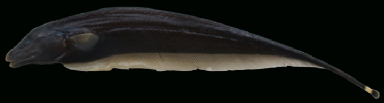
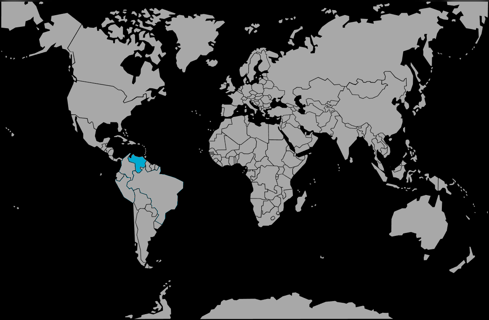

Systématique
- Ordre : Gymnotiformes
- Famille : Apteronotidae
- Genre : Apteronotus
- Espèce : A. apurensis

Apteronotus apurensis est un poisson-couteau originaire du Venezuela, spécifiquement du bassin de la rivière Apure.
C'est une espèce de grande taille, pouvant atteindre 46,5 cm de longueur totale. Il partage la morphologie typique de son genre : corps allongé et comprimé latéralement, couleur de fond sombre (brun foncé à noir) et absence de nageoires dorsale et pelviennes. La nageoire caudale est présente mais minuscule, tandis que la nageoire anale court sur presque toute la longueur du corps.
Comme tous les Apteronotidae, il possède un organe électrique dérivé de cellules nerveuses, produisant un champ de faible voltage utilisé pour se repérer dans son environnement (électrolocation) et communiquer avec ses congénères.
C'est un poisson strictement benthique et nocturne.
Peu d'informations éthologiques spécifiques sont disponibles pour cette espèce rare en captivité, mais compte tenu de sa grande taille et de son genre, il s'agit vraisemblablement d'un poisson solitaire et territorial. Il nécessite de nombreuses cachettes (racines, roches) pour se reposer durant la journée.
Mode : ovipare.
Aucune information documentée sur la reproduction en aquarium.
Dimorphisme sexuel : Aucune donnée précise pour *A. apurensis*. Cependant, chez de nombreuses espèces d'Apteronotus de grande taille, les mâles matures présentent souvent un museau plus allongé que les femelles.
Espérance de vie : Aucune donnée précise, mais probablement élevée (> 10 ans) au vu de sa taille.
Il est endémique du Venezuela, dans le bassin de la rivière Apure (système de l'Orénoque). Il fréquente les eaux douces tropicales.
Répartition

Origine naturelle :
- Venezuela : Bassin de la rivière Apure.
- Bassin de l'Orénoque.
Paramètres de maintenance
Température : Estimée entre 24 et 28 °C (zone tropicale).
pH : Probablement entre 6,0 et 7,0.
GH : Aucune donnée spécifique.
Courant : Modéré à fort (espèce fluviatile).
Volume conseillé : En raison de sa taille adulte importante (46,5 cm), un aquarium de très grand volume est impératif, minimum 600 L pour un individu, avec une grande longueur de façade.
Régime alimentaire
Régime : carnivore.
Il se nourrit de larves d'insectes aquatiques et d'autres invertébrés benthiques dans la nature. En captivité, il nécessite des proies charnues conséquentes (vers, crevettes, etc.).